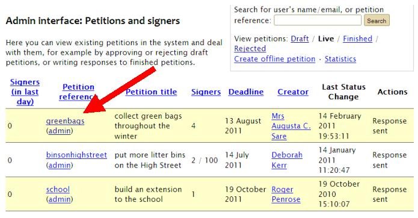
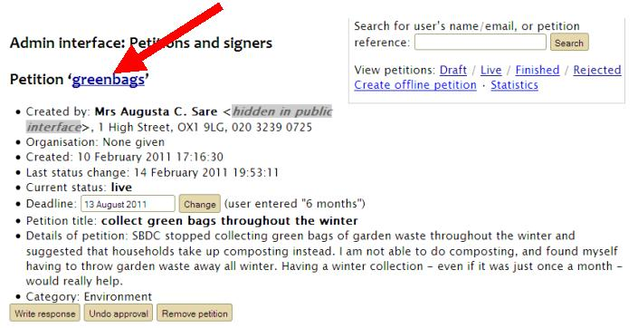

To view a petition on the public website, starting from the admin interface
To go to the public page for a petition from the admin interface, simply click the short name of the petition, and this will take you through to the public website. You can do this for Live, Finished, and Rejected petitions (Draft petitions are not shown on the public website).
You can find the petition’s short name either in the list of petitions on the admin interface:
Or on the admin page for that particular petition:
